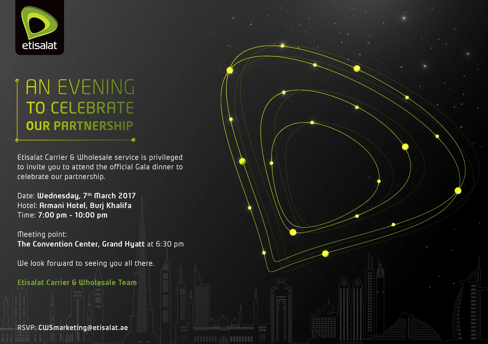
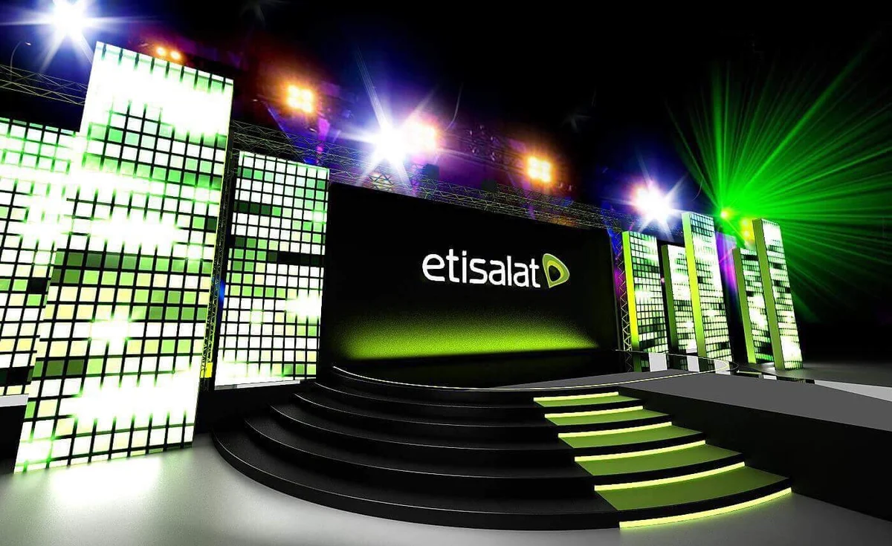
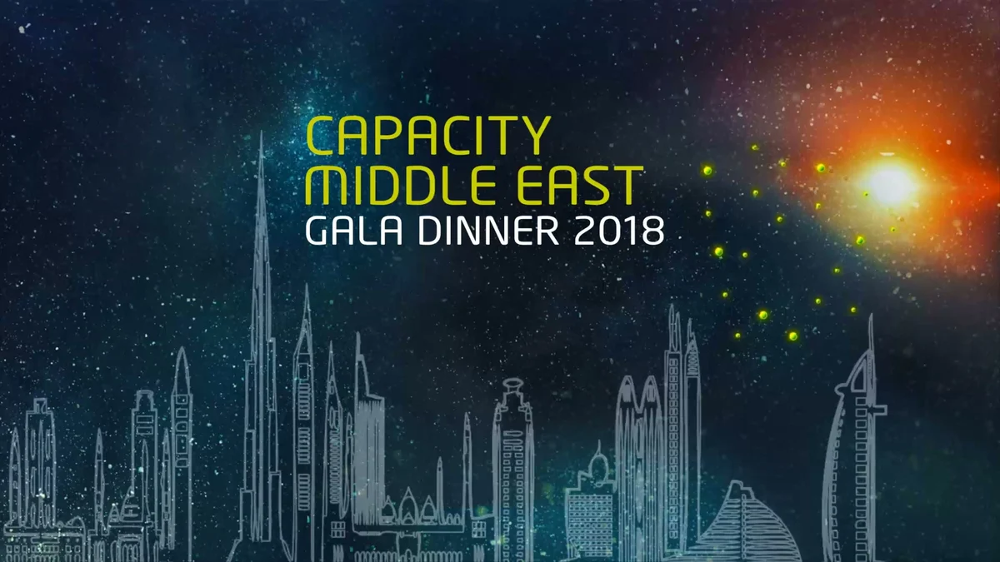
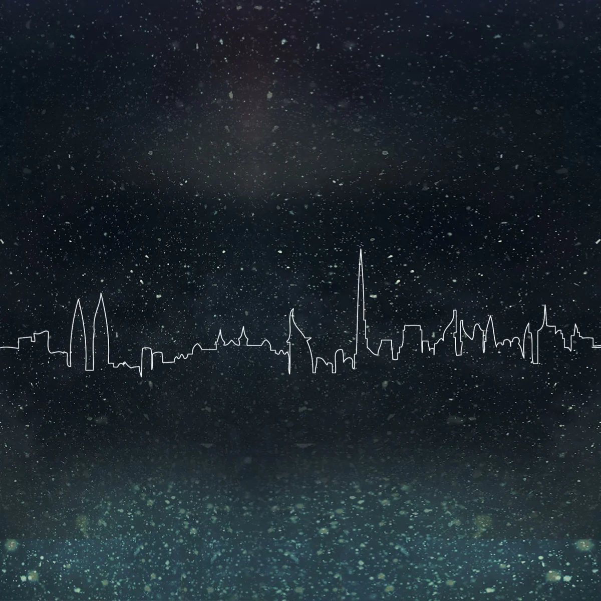
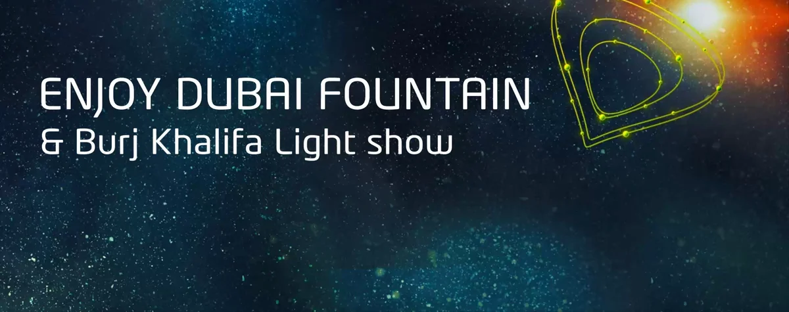
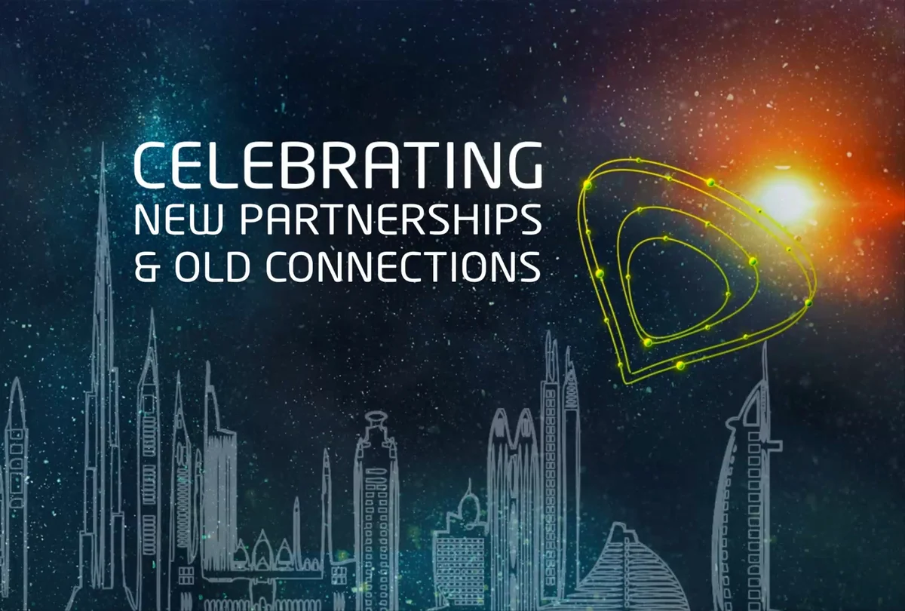

Capacity Middle East
2019 · Nasimi Beach, Atlantis, The Palm · event film made for Etisalat
Capacity Middle East, for e& (then Etisalat) · Armani Hotel, Burj Khalifa, 2018, and Atlantis, The Palm, 2019 · Creative direction and co-production, through AntBrush with MCX.
2018 · The Pavilion, Armani Hotel, Burj Khalifa · the opening film for the stage screen, as delivered
Capacity Middle East
e& galas · Armani Hotel, Burj Khalifa, 2018 · Atlantis, The Palm, 2019
Capacity Middle East
e& galas at the Armani Hotel, Burj Khalifa, and Atlantis, The Palm
Capacity
Middle East.
A gala dinner for Etisalat’s partners from around the world.
Capacity Middle East is the telecom carriers’ conference in Dubai. During it, Etisalat, now e&, hosted the carriers and suppliers it works with. Won by tender two years running, with MCX.
Creative direction and artwork by Antoni Gerges, through AntBrush, with MCX.

7 March 2018 · The first dinner
The Pavilion,
Armani Hotel, Burj Khalifa.
Capacity Middle East

One terrace,
two stages.
The terrace of The Pavilion, beside the Dubai Fountain, nine days before the dinner. Then two stage designs for it: cells of screen in green rims, and towers of light tiles. Renders, 2018.


Points of light.
One mark.
Built here from the 2018 invitation’s own drawing, and the films delivered for the stage.
Points that join
The invitation drew Etisalat’s mark as points of light, joined into orbits.
The city, in one line
Two square walls beside the stage. On each, Dubai draws itself as a single line, mirrored, growing outward.
A film for each moment
Briefed by name on 1 March 2018, six days before the dinner: one film for each moment of the night, from the fountain to the draw. The last closed on the line: celebrating new partnerships & old connections.
6 March 2019 · The second dinner
Nasimi Beach,
Atlantis, The Palm.
The same words,
at the beach.
The sign at the arrival carried the 2018 line again: an evening to celebrate our partnership.


Explore the build
What we delivered.
The idea, 2018
- Two creative directions
- Running order and a slide-by-slide animation breakdown
Screens & content
- Main-screen films, nine, 2018
- Side films, two, 2018
Event
- 2018, with MCX: stage, LED, sound and light, registration backdrop, photo and video, entertainment
- 2019, with MCX: layout and seating, theme, three acts, branding

2018: creative direction B, light tiles 
Main-screen film: the title 
Side film for the left wall 
Main-screen film: a moment of the night 
Main-screen film: the end card
From the delivered films, the mail of March 2018, the payment advice and the job register.
Asked back:
a proposal.
Proposal · not builtIn 2023 e& asked AntBrush, my agency, to bid for the dinner. Its new mark completed the name, Capacity Me&, and one walk led from the waterfront gate to the stage. We drew it two ways.


The result.
Two nights for Etisalat’s international carrier partners: 7 March 2018 at the Armani Hotel, Burj Khalifa, and 6 March 2019 at Atlantis, The Palm.
2018 and 2019More figures
Dates and venues: the running orders of 2 March 2018 and 3 March 2019. Tender: the win of 25 February 2018 and the confirmation of 26 February 2019. Films and plates: the delivered files of 7 March 2018. 2023: the proposal deck and the bid of January 2023.
Creative Director, Brand & Experiential
Both nights, on film.
Two partner galas for Etisalat, now e&, co-produced with MCX.
Read more
For the 2018 event, I led the concept and artwork and directed the stage films with an animator, connecting the evening through a single line of the Dubai skyline.
The dinnerEach March, during the Capacity Middle East telecom congress in Dubai, Etisalat’s Carrier & Wholesale arm hosts a private dinner for the international carriers it works with. Etisalat is now e&.
The invitation set the line: “An evening to celebrate our partnership.” The key visual answered: “Celebrating new partnerships & old connections.”
Both drew Etisalat’s mark as points of light joined into orbits, over Dubai drawn as one line.
The stage brief came to me by name on 1 March 2018, six days before the dinner. Nine films for the main screen, one for each moment of the night; two square films for the side walls; three stage plates. An animator made them under my direction.
A year later the dinner moved to Nasimi Beach, Atlantis, The Palm. The film at the top of this page is Etisalat’s event film of that night.
Both nights were won and produced by MCX, where I was Partner, Creative Director & Co-producer, through AntBrush.
The 3D is made for this portfolio from the invitation’s own drawing; the films are as delivered. The invitation’s date line reads 2017, a slip in the artwork: the dinner was on Wednesday 7 March 2018. The 2023 design at the end is a proposal; it was not built.